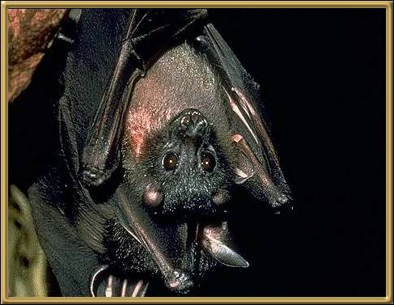

Bare Backed Fruit Bat - these bats appear to have a bare back because of the way the wings close together at the back. They're found only at the very top of Northern Queensland.
Photographer: Unknown